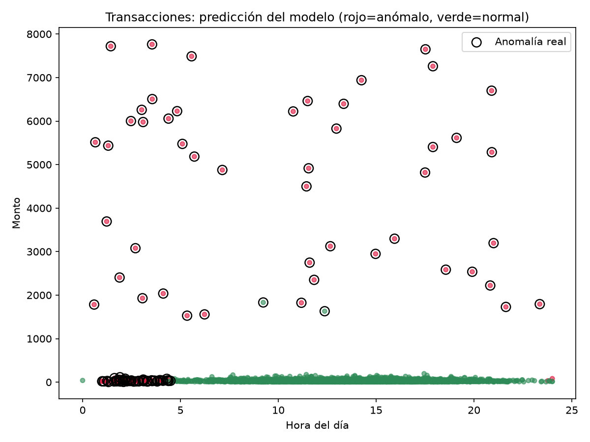
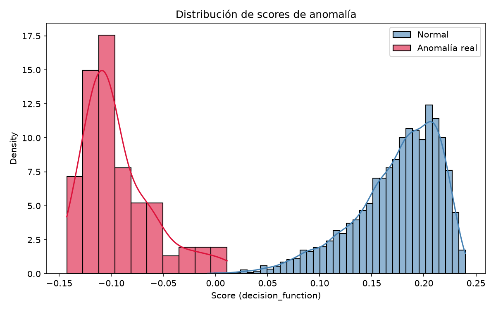

Detecta transacciones anómalas con Isolation Forest sobre un flujo sintético de pagos y las muestra en un dashboard interactivo de Streamlit.
5000 transacciones sintéticas con un 2 % de casos raros: montos muy altos o ráfagas de madrugada.
Modelo no supervisado: aprende qué es normal y marca lo que se aísla fácil.
Cambia el tamaño de la muestra y la contaminación y mira las métricas y gráficas al instante.
Haz clic en un bloque para ver qué hace, qué recibe y qué entrega.
Flujo: datos → data_processing.py → model.py → evaluate.py → results/ y dashboard.py
El detalle aparece aquí, con enlace al código fuente.
Primeras filas de data/synthetic_transactions.csv:
transaction_id,amount,hour,location_code,frequency_last_24h,is_anomaly TXN-000000,16.86,10.44,4,5,False TXN-000001,25.78,14.99,5,2,False
results/metrics.json:
{
"precision": 0.98,
"recall": 0.98,
"f1": 0.98
}
5000 transacciones sintéticas, seed 42, contaminación 0.02.
| Métrica | Valor |
|---|---|
| Precision | 0.98 |
| Recall | 0.98 |
| F1 | 0.98 |


python -m venv venv venv\Scripts\pip install -r requirements.txt venv\Scripts\python src/run_pipeline.py venv\Scripts\streamlit run src/dashboard.py
Diseño interno en ARQUITECTURA.md · repositorio